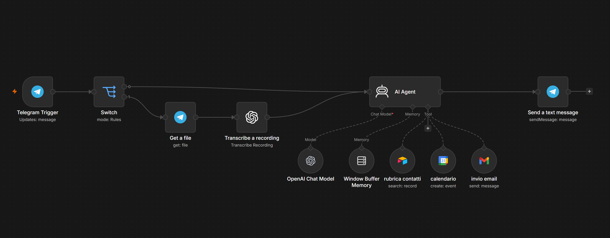
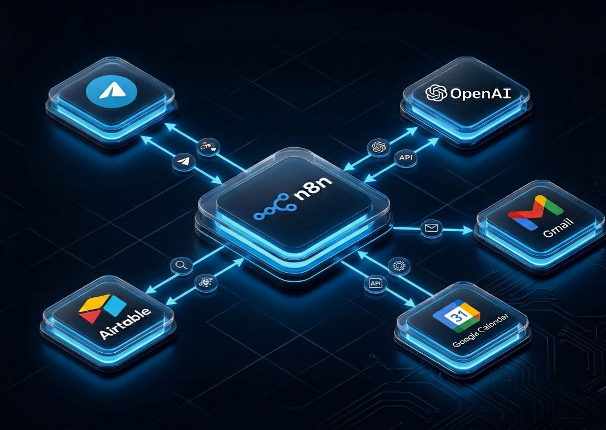
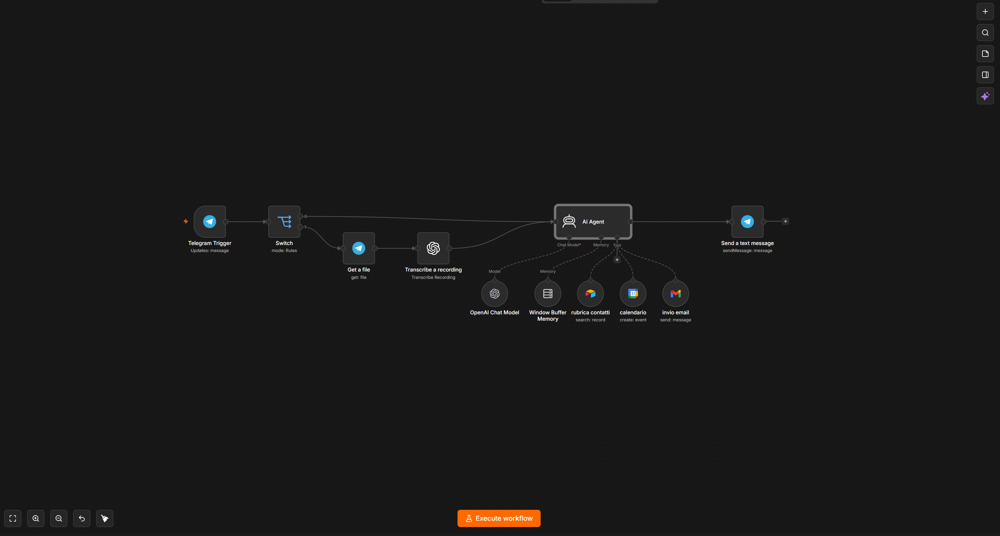

Automating everyday tasks with AI
An AI-powered workflow built with n8n that automates email management and appointment scheduling through natural language. The assistant understands text and voice messages sent via Telegram and turns them into real-world actions — sending emails or creating calendar events.

Workflow design, AI agent configuration, prompt design, API integrations.
Self-initiated automation project — a working AI assistant, not just a concept.
Telegram chat — text and voice messages as the only input the user needs.
Production-ready n8n workflow, agent instructions, live demo video.
- 01Goal
- 02Workflow
- 03Integrations
- 04Agent design
- 05Demo
Less context-switching, fewer repetitive tasks
The objective was to create a practical AI assistant capable of reducing repetitive administrative tasks and simplifying daily workflows.
Instead of manually managing emails and appointments across different apps, the user simply talks to the assistant in natural language — one conversation replaces three or four app switches.
From conversation to action
The system combines AI, API integrations and automation within a single orchestrator. The assistant can autonomously:
- aUnderstand text and voice requests.
- bRetrieve specific contact information.
- cSend emails automatically via Gmail.
- dCreate and update Google Calendar events.
- eKeep context across continuous conversational interactions.

Tools & integrations
The architecture connects several specialized services to guarantee fluid communication and reliable execution:

Beyond the model
The agent's behavior is not determined solely by the language model. To ensure predictability, its actions are tightly guided through strict system instructions, defined tool configurations, active context management and clear operational boundaries.
This systematic approach keeps the assistant reliable, avoids hallucinations, and keeps every action strictly aligned with user intentions.
Practical AI for real-world tasks
This project demonstrates how AI agents can effectively automate structured tasks while operating within a controlled environment.
Rather than replacing users, the system supports them — reducing repetitive work and improving efficiency, while maintaining human oversight where it matters.
